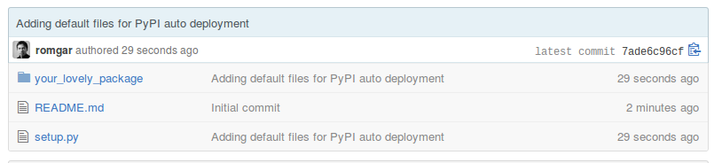
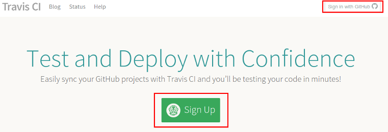
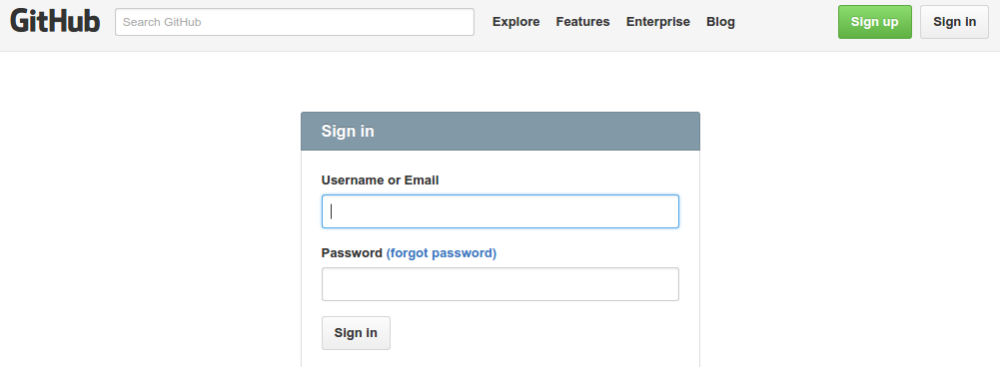
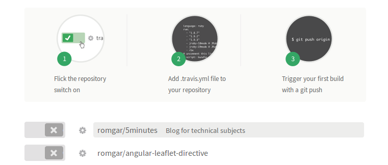

Be able to install your package with pip:
1 $ pip install your_lovely_package
Easily deploy a new release on PyPI, for example by pushing a tag on master branch.

You only need:
Example:
1 import os
2 from setuptools import setup
3
4 setup(
5 name='your-lovely-package',
6 version='0.1',
7 packages=['your_lovely_package'],
8 include_package_data=True,
9 license='BSD License', # example license
10 description='A simple lovely package.',
11 long_description='You could read README file and put it there',
12 url='https://github.com/romgar/your-lovely-package',
13 author='Romain Garrigues',
14 author_email='romain.garrigues.cs@gmail.com',
15 classifiers=[
16 'Framework :: Django',
17 ],
18 )


https://travis-ci.org/profile/romgar

Create a .travis.xml file on your GitHub repository root:
1 language: python
2
3 python:
4 - "2.7"
5
6 script:
7 - touch foo
1 language: python
2
3 python:
4 - "2.7"
5
6 script:
7 - touch foo
8
9 deploy:
10 provider: pypi
11 user: romgar
12 password:
13 secure: my_secure_password
14 on:
15 tags: true
16 branch: master
user: your PyPI username
password: should be generated with:
1 $ gem install travis
2 $ travis encrypt --add deploy.password
The generated password will be automatically added to your .travis.yml config file.
| Table of Contents | t |
|---|---|
| Exposé | ESC |
| Full screen slides | e |
| Presenter View | p |
| Source Files | s |
| Slide Numbers | n |
| Toggle screen blanking | b |
| Show/hide slide context | c |
| Notes | 2 |
| Help | h |